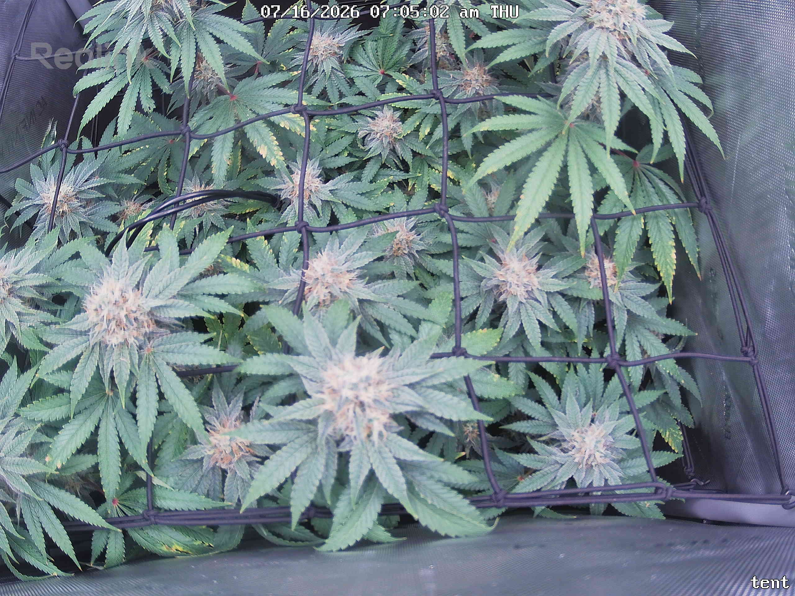
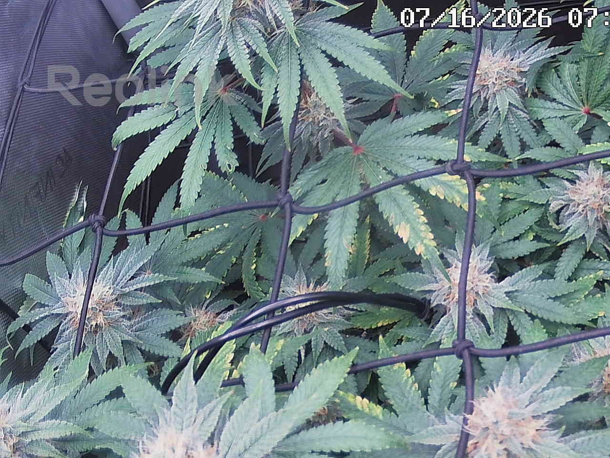
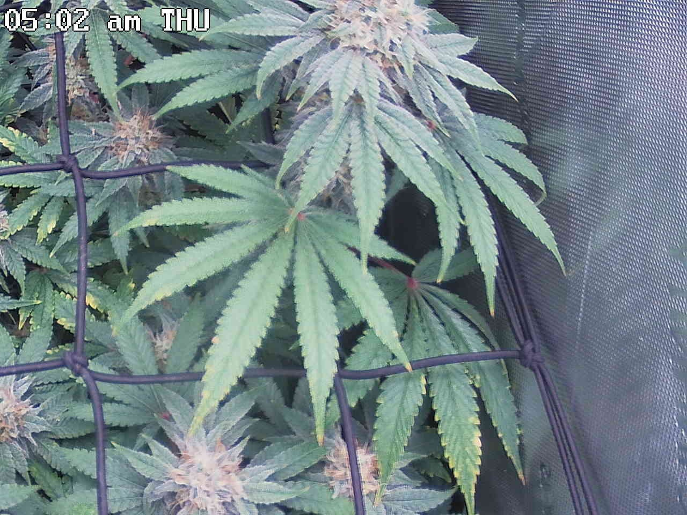
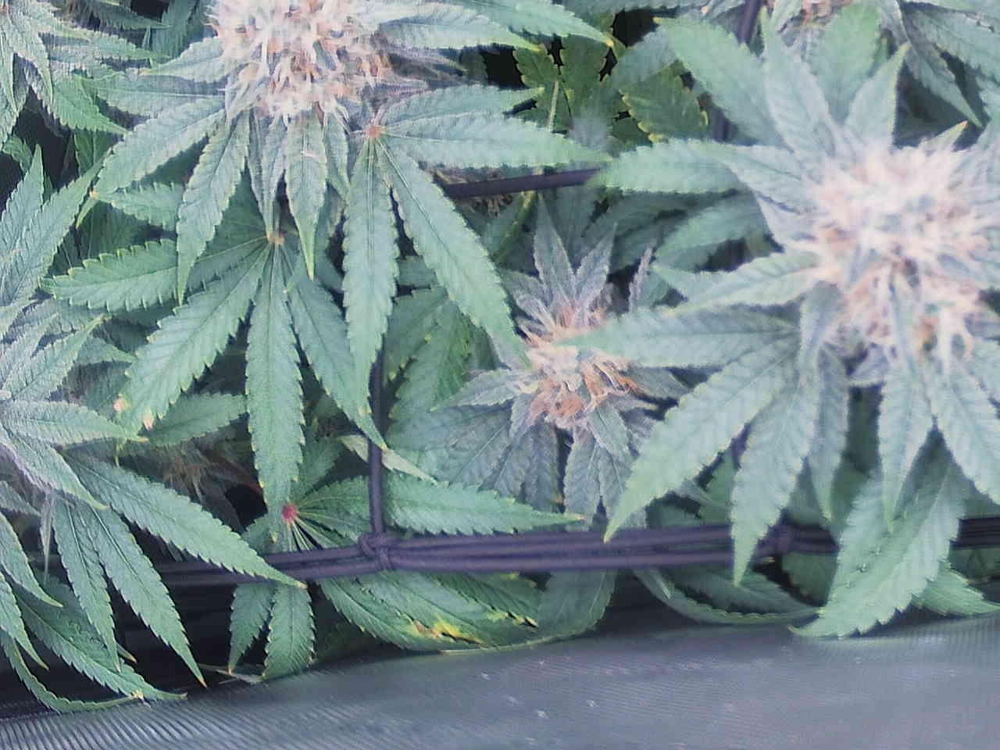
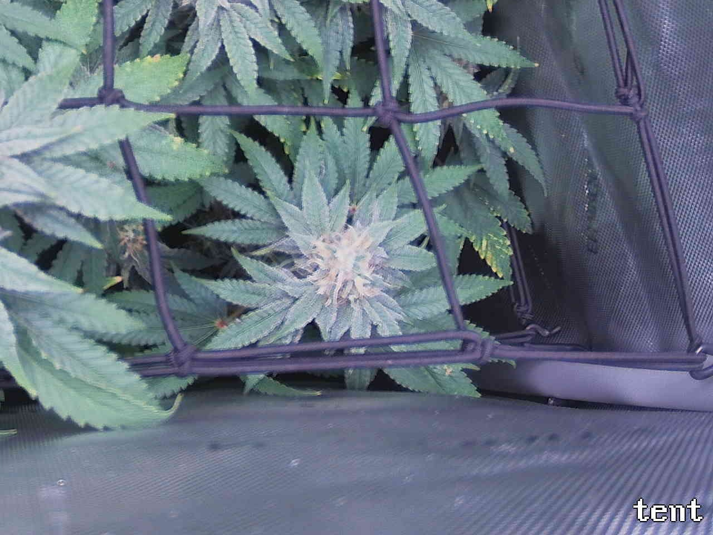

Per-quadrant analysis — the canopy shot was split into a 2x2 grid and each region compared against the previous day.
The plant is healthy and on-track for late flower (~day 43): all four quadrants report frosty colas with pistils progressing cream→amber, deep-green new growth, normal turgor, and no pests, powdery mildew, or botrytis at this resolution. The only systemic issue is marginal/tip yellowing with minor necrotic flecking confined to interior and lower/older fan leaves — present in every quadrant and consistent day-over-day (7/15→7/16), matching the previously logged senescence watch item; note that a potassium draw produces the same serration-margin pattern and cannot be excluded from a photo, so this remains the one symptom worth tracking rather than dismissing. Red/magenta petiole coloration is stable benign anthocyanin. No quadrant is marked ATTENTION (all four are OK), and no urgent action is required; the single most useful step is to keep monitoring the lower-leaf marginal yellowing for upward spread into tops/new growth (which would argue K draw over senescence) while beginning trichome checks as harvest approaches.
Bud sites (whole plant, estimate): 13-21
Bud sites: 3-5
Bud sites: 3-4